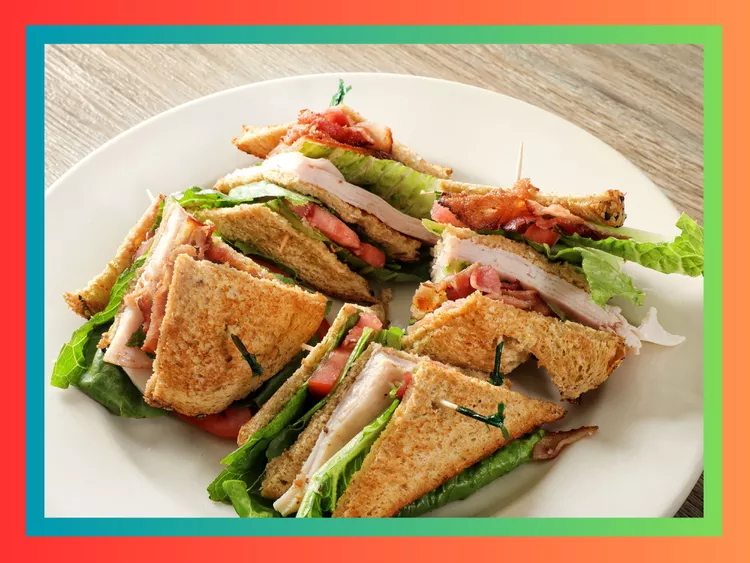

Turkey BLT 🥪

This is what you'll have on your plate when done reading and mastering this recipe!
Ingredients
- Bread: Usually white, toasted.
- Turkey: Sliced deli turkey or leftover roasted turkey.
- Bacon: Crispy, cooked bacon strips.
- Lettuce: Fresh, crisp lettuce leaves, often iceberg or romaine.
- Tomato: Sliced fresh tomato.
- Mayonnaise: Spread on the bread slices.
- Cheese (Optional): Often Swiss or cheddar.
Steps
If you would like to add cheese, add this in Layer 1 after adding your turkey slices. It will, however, be left out of these instructions otherwise as it is optional.
- Prepare the ingredients.
- Toast three slices of bread.
- Cook 2-3 strips of bacon until crispy.
- Slice your tomato.
- Wash your lettuce.
- Spread mayonnaise on toast.
- Layer 1
- Place toasted bread on a plate with the mayonnaise side facing up.
- Add a later of lettuce on the toast.
- Add a few slices of turkey on top of the lettuce.
- Add 1 slice of tomato on top of the turkey.
- Add 2 slices of bacon on top of the tomato.
- Middle Layer
- Add mayonnaise to a new slice of toast.
- Place that new slice of toast on top of the bacon, mayonnaise side down.
- Add another layer of mayonnaise to the side facing out.
- Layer 3
- Close the sandwich with a slice of toast at the bottom.
- Enjoy!
Home